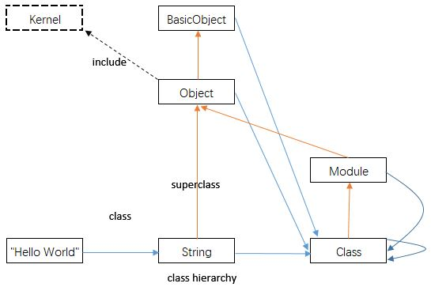

-
add additional methods to a specific class,e.g. String, site effects: the added methods may overrides the existing method.
class String
def to_aphanumeric
gsub(/[^\w\s]/,'')
end
end
-
Unit Testing
require 'test/unit'
class ToAlphanumericTest < Test::Unit::TestCase
def test_strip
assert_equal '3 the Magic Number ','#3 the *Magic Number *?'.to_alphanumeric
end
end
-
class 关键字的核心任务是把你带到类的上下文，让你可以在里面定义方法.
-
对象包含实例变量及指向类的指针. Object#instance_variables,Object#methods,Object#class
可以获取相关信息.实例变量在对象中，而方法在类中.
-
任何以大写字母开头的引用都是常量:包括类名/模块名,常量可以通过路径来访问:
Y = 'a root level constant'
module M
class C
X = 'a constant'
Y = 'another constant'
W = ::Y # reference to top level Y
end
C::X # => 'a constant'
end
M::C::X # => 'a constant'
# Module#constants(实例方法) returns the current scope Constants.
# Module.constants(类方法) returns the top level Constants.
M.constants # => [:C]
Module.constants.include? :Object # True
Module.constants.include? :Module # True
-
类本身也是对象,其类为 Class
"Hello World".class # String
String.class # Class
Array.class # Class
Class.class # Class
Class.superclass # Module
Module.superclass # Object
Array.superclass # Object
Object.superclass # BasicObject
BasicObject.superclass # nil
-
方法查找: '向右一步，再向上'

class MyClass
def my_method
'my_method()'
end
end
class MySubClass < MyClass
end
obj = MySubClass.new
obj.my_method() # 'my_method()'
# the Object class includes Kernel modules.
MySubClass.ancestors # => [MySubClass,MyClass,Object,Kernel,BasicObject]
我们可以通过下列方法来查询某个方法定义的位置:
# monkey patch: mimic the step right, and lookup behaviors.
module Kernel
def locate(m)
singleton_class.ancestors.filter {|v| v.instance_methods(false).include? m}[0]
end
end
-
内核方法 : Kernel模块被包含在Object类中，成为了每一个类的祖先链，其中的方法对所有对象可见. 使得一些方法称为关键字:
Kernel.private_instance_methods.grep(/^pr/) # => [:print,:printf,:proc]
-
self 关键字 : 每一行代码都在当前对象执行.所有没有明确指明接收者的方法，都在当前对象调用. self
也可以表示当前对象，可以利用self对其进行访问。调用一个方法时，接收者就成为self.
从这一刻起，所有的实例变量都是self的实例变量，所有没有明确指明接收者的方法都是在self上调用。
一旦你的代码转而调用其他对象的方法，这个对象就成为self.
-
私有规则
-
细化: refinement - 可以将对类的修改限制到一个模块中. 用using语句使其生效.
module StringExtension
refine String do
def to_alphanumeric
gsub(/[^\w\s]/,'')
end
end
end
module stringStuff
using StringExtension
# the to_alphanumeric is only avaible in this scope.
end